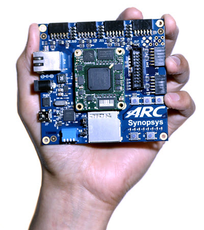

DesignWare(R) ARC(R) EM Starter Kit
Overview
The DesignWare(R) ARC(R) EM Starter Kit is a low-cost, versatile solution enabling rapid software development and software debugging, and profiling for the ARC EM Family of processors. The EM Family includes the EM4, EM6, EM5D, EM7D, EM9D, and EM11D cores. The Zephyr RTOS can be used with the EM Starter Kit.
{kind=link}
The ARC EM Starter Kit consists of a hardware platform, including pre-installed FPGA images of different ARC EM processor configurations with peripherals. Documentation for this board can be found at the following URL: https://www.embarc.org.
See also this URL for details about the board: https://www.synopsys.com/dw/ipdir.php?ds=arc_em_starter_kit
The default configuration for EM Starter Kit boards can be found in
boards/arc/em_starterkit/em_starterkit_defconfig.
The default SOC for this board is the EM9D. This configuration is a Harvard
Architecture, with a separate instruction bus and data bus. Instruction memory
is called ICCM and data memory is called DCCM. The configuration file for EM9D
is found in arch/arc/soc/em9d/Kconfig.defconfig.
If you have a larger program, you can select the EM7D or EM11D, which gives
access to 128KB DRAM with i-cache and d-cache. The configuration file for EM7D
is found in arch/arc/soc/em7d/Kconfig.defconfig and EM11D is found in
arch/arc/soc/em11d/Kconfig.defconfig.
Hardware
Board Layout
The ARC EM Starter Kit main board has 6 Pmod connectors. These can be configured to support attachment of GPIO, I2C, UART or SPI devices.
The board also has a 16MB SPI-FLASH and an SDCard for storage. There are 9 LEDs, 3 buttons, and 4 dip switches that can be used with GPIO.
The Xilinx Spartan(R)-6 LX150 FPGA can auto-load one of 3 FPGA SOC bit files which have the EM7D, EM9D, or EM11D SOC.
Documentation and general information for the board can be found at the embARC-website, which also includes some free sample software.
Supported Features
The Zephyr kernel supports multiple hardware features on the EM Starter Kit through the use of device drivers.
The EM Starter Kit supports 6 Digilent Pmod(TM) Interfaces, which enables the use of a large variety of pluggable modules for storage, communications, sensors, displays, etc. With the Pmod interface, you can prototype your applications using the Zephyr RTOS.
The table below shows which drivers are supported and which functionality can be found on which architectures:
| Interface | Controller | EM9D | EM11D | Driver/Component |
|---|---|---|---|---|
| INT | on-chip | Y | Y | interrupt_controller |
| UART | usb + 2 Pmods | Y | Y | serial port-polling; serial port-interrupt |
| SPI | 2 Pmods | Y | Y | spi |
| ADC | n/a | N | N | adc (can add via Pmod) |
| I2C | 2 Pmods | Y | Y | i2c |
| GPIO | 6 Pmods | Y | Y | gpio |
| PWM | n/a | N | N | pwm |
The board has 3 (debounced and interrupting) buttons for use with GPIO, 4 dip switches, 9 LEDs, SDCard on SPI, and a 16MB SPI-Flash memory.
The SPI-Flash also holds 3 (or 4) separate FPGA CPU bit files, selectable via dip switch.
The SPI-Flash is also programmed with a bootloader. The booloader can copy a program image from SPI-Flash into executable memory. Zephyr initialization will copy the initialized data section to the data memory if CONFIG_XIP is used.
Programming and Debugging
Required Hardware and Software
To use Zephyr RTOS applications on the EM Starter Kit board, a few additional pieces of hardware are required.
- USB Cable (delivered as part of the ARC EM Starter Kit)
- The USB cable provides power to the board; however, if the board is to run standalone, the universal switching power adaptor (110-240V AC to 5V DC), provided in the package, can be used to power the board.
- The Zephyr SDK
- Terminal emulator software for use with the USB-UART. Suggestion: http://www.putty.org.
- (optional) A collection of Pmods. See http://store.digilentinc.com/pmod-peripheral-modules or develop your custom interfaces to attach to the Pmod connector.
Building Sample Applications
You can try many of the sample applications or tests, but let us discuss
the one called Hello World.
It is found in $ZEPHYR_BASE/samples/hello_world.
You may need to write a prj_arc.conf file if the sample doesn’t have one. Next, you can use the make menuconfig rule to configure the target. By providing the argument “BOARD=em_starterkit”, you can select the ARC EM Starter Kit board support for Zephyr.
$ make menuconfig BOARD=em_starterkit
On this board you will also need to consider the “ARC SoC Selection” and set it either to EM9D or EM11D. To boot up the EM9D on the board, all dip switches should be UP except for switch 1. Other configuration choices are made in the normal way. To boot up the EM11D on the board, all dip switches should be UP except for switch 2. Next press the button above the letter C in the “ARC” logo on the silkscreen.
To build the application, execute make:
$ make BOARD=em_starterkit
Connecting Serial Output
In the default configuration, Zephyr’s EM Starter Kit images support serial output via the UART1 on the board. To enable serial output:
On your development environment, you will need to:
- Open a serial port emulator (i.e. on Linux minicom, putty, screen, etc)
- Specify the tty driver name, for example, on Linux this may be
/dev/ttyUSB1 - Set the communication settings to:
| Parameter | Value |
|---|---|
| Baud: | 115200 |
| Data: | 8 bits |
| Parity: | None |
| Stopbits: | 1 |
Debugging
Before you can debug, you will need to download and install the Synopsys versions of ARC GNU tools. Unfortunately the Zephyr-SDK versions of openocd and gdb have some functionality limitations and don’t yet work well with the ARC EM Starter Kit.
The Synopsys tools are found on GITHUB here:
https://github.com/foss-for-synopsys-dwc-arc-processors/toolchain/releases/tag/arc-2016.03
For Linux, you will need:
- arc_gnu_2016.03_ide_linux_install.tar.gz
- arc_gnu_2016.03_prebuilt_elf32_be_linux_install.tar.gz
You can untar these into any directory. Suggestion: /usr/local/arc. Follow the instructions for how to set up to use these tools. You will need your path changed to refer to the bin directories for these so that these cross development tools can be found.
It is also useful to create a bash script to launch openocd, since if you are like me, you will find it hard to remember the arguments. Here is the one I use, placed in a file called ocd.
#!/bin/bash
openocd -c 'gdb_port 3333' -s $ARCGNU_IDE/share/openocd/scripts -f board/snps_em_sk_v2.2.cfg
#where the environment variable ARCGNU_IDE refers to the install dir of the
#openocd IDE
This command to openocd uses port 3333 with gdb client, and provides the board cfg file for the ARC EM Starter Kit.
I have also found it useful to have a script, named debug.sh, to provide all the arguments to gdb:
#!/bin/bash
arc-elf32-gdb \
-ex "target remote :3333" \
-ex "load" \
-ex "break __memory_error" \
-ex "break _SysFatalErrorHandler" \
-ex "set remotetimeout 2000" \
outdir/em_starterkit/zephyr.elf
The target remote and load will attach to openocd and load the elf file into memory. You can also set breakpoints on CPU exception handlers, or fatal error handlers.
Now to use these two scripts is easy. Boot up the SOC by pressing the “C” button. Be sure the digilent cable is attached from your host to the EM Starter Kit board.
In any terminal window, invoke the “ocd” script first. It should establish contact with the board and output many messages. For example:
Open On-Chip Debugger 0.9.0-dev-g90a4ff5 (2016-05-04-15:37)
Licensed under GNU GPL v2
For bug reports, read
http://openocd.sourceforge.net/doc/doxygen/bugs.html
adapter speed: 5000 kHz
Info : clock speed 5000 kHz
Info : JTAG tap: arc-em.cpu tap/device found: 0x200044b1 (mfg: 0x258, part: 0x0004, ver: 0x2)
Info : JTAG tap: arc-em.cpu tap/device found: 0x200044b1 (mfg: 0x258, part: 0x0004, ver: 0x2)
target state: halted
target state: halted
In a second console window, navigate to the directory for your sample application, and invoke the debug.sh script:
GNU gdb (ARCompact/ARCv2 ISA elf32 toolchain 2016.03) 7.10
Copyright (C) 2015 Free Software Foundation, Inc.
License GPLv3+: GNU GPL version 3 or later <http://gnu.org/licenses/gpl.html>
This is free software: you are free to change and redistribute it.
There is NO WARRANTY, to the extent permitted by law. Type "show copying"
and "show warranty" for details.
This GDB was configured as "--host=x86_64-unknown-linux-gnu --target=arc-elf32".
Type "show configuration" for configuration details.
For bug reporting instructions, please see:
<https://github.com/foss-for-synopsys-dwc-arc-processors/toolchain/issues>.
Find the GDB manual and other documentation resources online at:
<http://www.gnu.org/software/gdb/documentation/>.
For help, type "help".
Type "apropos word" to search for commands related to "word"...
Reading symbols from outdir/zephyr.elf...done.
Remote debugging using :3333
0x000077b4 in ?? ()
Loading section text, size 0x3714 lma 0x0
Loading section devconfig, size 0x78 lma 0x3714
Loading section gpio_compat, size 0x20 lma 0x378c
Loading section rodata, size 0x244 lma 0x37ac
Loading section datas, size 0x714 lma 0x80000000
Loading section initlevel, size 0x78 lma 0x80000714
Loading section _k_task_list, size 0x58 lma 0x8000078c
Loading section _k_task_ptr, size 0x8 lma 0x800007e4
Loading section _k_event_list, size 0x10 lma 0x800007ec
Start address 0x36f4, load size 16876
Transfer rate: 122 KB/sec, 1406 bytes/write.
Breakpoint 1 at 0x3264: file /home/johndoe/repository/zephyr/arch/arc/core/fault_s.S, line 81.
Breakpoint 2 at 0x3628: file /home/johndoe/repository/zephyr/arch/arc/core/sys_fatal_error_handler.c, line 73.
(gdb)
At this point you can do your normal debug session. Set breakpoints and then ‘c’ to continue into the program.
Flashing
Most of the time you will not be flashing your program but will instead debug it using openocd and gdb. The program can be download via the USB cable into the code and data memories.
When you are ready to deploy the program so that it boots up automatically on reset or power-up, you can follow the steps to place the program on SPI-FLASH.
For instructions on how to write your program to SPI-FLASH, refer to the documentation on the ARC EM Starter Kit at the embARC-website, which includes instructions for how to place an executable image onto the SPI-FLASH in such a way that it is understood by the bootloader.
Release Notes
The following is a list of TODO items: